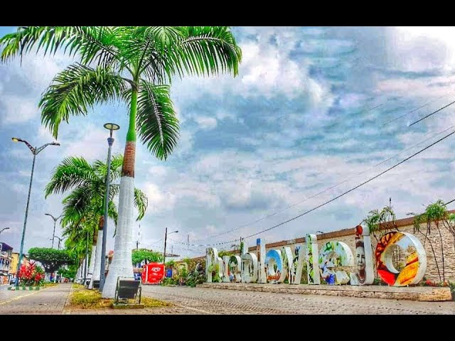
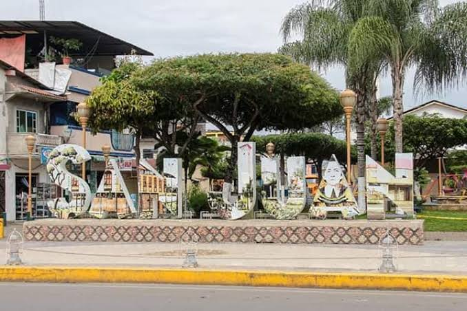
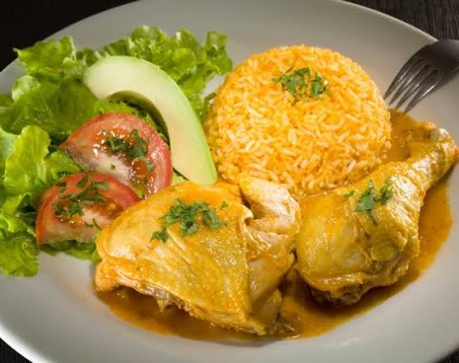
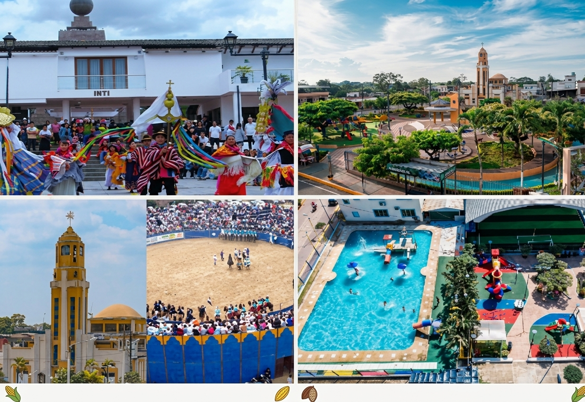
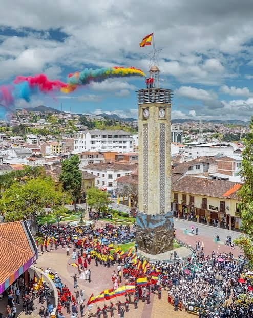

Cantón Puebloviejo

Historia y Tradición en el Corazón de Los Ríos
Bienvenido a la página oficial del cantón Puebloviejo. Con una historia que se remonta a la época colonial, este cantón se caracteriza por su herencia cultural, la calidez de su gente y su vocación agrícola, especialmente en la producción de banano, cacao y arroz.
Menú de Navegación
Historia

Puebloviejo es uno de los asentamientos más antiguos de la región. Durante la colonia fue un importante punto de paso y comercio. Su cantonización oficial se dio el 7 de febrero de 1846, lo que lo convierte en uno de los cantones fundadores de la provincia de Los Ríos.
Parroquias

El cantón cuenta con parroquias urbanas y rurales que reflejan su diversidad:
- Parroquia Urbana: Puebloviejo (cabecera cantonal).
- Parroquias Rurales: Puerto Pechiche y San Juan.
Gastronomía

La comida de Puebloviejo ofrece sabores auténticos de la cocina criolla y montubia:
- Seco de gallina criolla y de pato.
- Arroz con menestra y carne asada (especialmente en San Juan).
- Ayampaco de pescado (tradición compartida).
- Humo de yuca y plátano.
Atractivos Turísticos

Entre sus atractivos se encuentran la Iglesia Central de San Francisco de Asís, el malecón en San Juan a orillas del río, y las haciendas cacaoteras que ofrecen experiencias de agroturismo. Sus fiestas patronales son muy reconocidas.
Alojamiento

Puebloviejo ofrece opciones de alojamiento sencillas y acogedoras, como hostales en la cabecera cantonal y San Juan, ideales para quienes buscan conocer la vida local y disfrutar de sus tradiciones.
Autoridades
Alcalde: Elsy Ospina Garcés
Población

Cuenta con una población aproximada de 40,000 habitantes, caracterizada por ser trabajadora, festiva y orgullosa de sus raíces montubias y de su historia.
Ubicación
Se ubica en la zona centro-sur de la provincia de Los Ríos. Limita al norte con Quevedo y Buena Fe, al sur con Babahoyo, al este con Ventanas y Urdaneta, y al oeste con Vinces y Baba.
← Regresar a la página principal (Index)